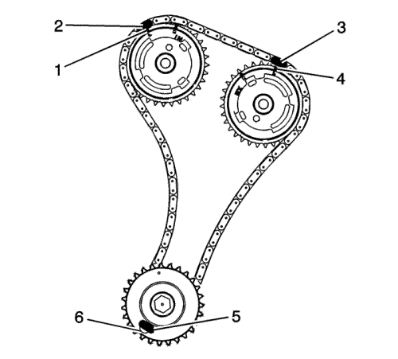

Sustitución del actuador de posición del árbol de levas - Bancada 2
Herramientas especiales
EN-48313 Herramienta de retención de la cadena de distribución
Si desea informarse sobre herramientas regionales equivalentes, consultar Herramientas especiales
Procedimiento de desmontaje

- Desmonte el colector de admisión. Consultar Sustitución del colector de admisión
- Desmonte la tapa del árbol de levas izquierdo. Consultar Sustitución de la tapa de los árboles de levas - lado izquierdo .
- Desmonte los sensores de posición de árbol de levas de admisión y escape izquierdos. Consultar Sustitución del sensor de posición del árbol de levas - Banco 2 (lado izquierdo) admisión y Sustitución del sensor de posición del árbol de levas - Banco 2 (lado izquierdo) escape .
- Desmonte las solenoides del actuador de posición de árbol de levas de admisión y escape izquierdos. Consultar Sustitución del solenoide de la válvula magnética del actuador de posición del árbol de levas - Banco 2 (Lado izquierdo) Admisión y Sustitución del solenoide de la válvula magnética del actuador de posición del árbol de levas - Banco 2 (Lado izquierdo) Escape .
Nota: Gire el perno del equilibrador del cigüeñal SÓLO hacia la derecha.
- Gire el equilibrador del cigüeñal usando el perno del equilibrador hasta que los árboles de levas estén en una posición neutral (baja tensión). Los árboles de levas estarán paralelos con el carril de la tapa del árbol de levas (1).

Nota: Asegúrese de que la cadena de distribución del árbol de levas y los actuadores de posición del árbol de levas están marcados para un montaje correcto.
- Use un marcador para crear una marca de alineación en uno de los eslabones de la cadena de distribución (2) y el diente adyacente en el actuador de posición del árbol de levas de escape (1).
- Use un marcador para crear una marca de alineación en uno de los eslabones de la cadena de distribución (3) y el diente adyacente en el actuador de posición del árbol de levas de admisión (4).
Precaución: Consulte Precaución, reacción del par contra la cadena de accionamiento de distribución en la sección Prólogo
- Use una llave de tuercas en el molde hexagonal de los árboles de levas de admisión y escape izquierdos y gire los árboles de levas encarándolos para crear holgura en la cadena entre los actuadores.
- Desatornille la herramienta EN-48313 para que las patas de la herramienta se retraigan.
- Inserte la herramienta EN-48313 entre los actuadores del árbol de levas, haga retroceder la cadena de distribución hasta que la línea inferior del cuerpo de la herramienta (2) esté adyacente a la superficie superior de la culata (1). Ésta es la posición de montaje aproximada.
Nota: La tapa delantera del motor se ha retirado en los siguientes diagramas por propósitos de claridad, pero NO se requiere este procedimiento.
- Asegúrese de que los pies (4) de las patas de la herramienta están encarados hacia el motor.
- Expanda parcialmente las patas (1, 3) de la herramienta EN-48313 girando el asidero en forma de T a la derecha.
- Inserte la pata de la herramienta (1) tras la guía de la cadena de distribución (2).
- Continúe expandiendo la herramienta EN-48313 hasta que las patas (1, 3) entren en contacto con la cadena de distribución. No apriete en este momento.
Nota: Asegúrese de que el pie(1) de la herramienta EN-48313 está encajado en uno de los bolsillos de eslabón para impedir que la herramienta se deslice durante el apriete de la herramienta EN-48313.
- Apriete a mano la herramienta EN-48313.
- Use una llave de tuercas en el molde hexagonal de los árboles de levas de admisión y escape izquierdos y gire los árboles de levas encarándolos para crear holgura en la cadena entre los actuadores.
- La herramienta EN-48313 está ahora correctamente instalada para retener la cadena de distribución en su posición.
- Utilice una llave hexagonal de extremo abierto en el árbol de levas para impedir la rotación de motor al aflojar el perno del actuador de posición del árbol de levas.
- Si substituye el actuador de posición del árbol de levas de escape, entonces extraiga el perno y el actuador.
- Si substituye el actuador de posición del árbol de levas de admisión, entonces extraiga el perno y el actuador.
- Si se desmontan los actuadores del árbol de levas de admisión y escape, la cadena de distribución se puede superponer sobre la herramienta EN-48313 una vez que se han retirado los actuadores.
- Gire el actuador para alinear la apertura de la rueda del reluctor del actuador con el bulón del sensor de leva en la cubierta delantera, con el objetivo de permitir el desmontaje del actuador.
- Desmonte la arandela de empuje del árbol de levas.
Procedimiento de montaje
Nota: Asegúrese de que la cadena de distribución del árbol de levas y los actuadores de posición del árbol de levas están marcados para un montaje correcto.
- Alinee la marca del actuador del árbol de levas de escape ( 1) con la marca de la cadena de distribución (2) realizadas durante el desmontaje.
- Asegúrese de que la marca de alineación del actuador del árbol de levas de admisión (4) y la de la cadena de distribución (3) también están alineadas.
- Coloque el actuador del árbol de levas de escape en el árbol de levas y monte el perno del actuador apretándolo a mano.
- Desmonte la herramienta EN-48313.
Nota:
| • | El actuador de posición del árbol de levas varía en función de la aplicación. |
| • | Las arandelas de empuje del árbol de levas deben instalarse en todas las aplicaciones de 2010 al revisar los actuadores de posición del árbol de levas. No instale arandelas en las aplicaciones de 2009, si no se dispone ya de ellas. |
- Asegúrese de que se utiliza la arandela de empuje del árbol de levas apropiada. Utilice una arandela de empuje de 1,6 mm (0,063 pulg.) en las aplicaciones que tengan 5 tornillos de sujeción en el lado posterior del actuador de posición del árbol de levas (1). Utilice una arandela de empuje gruesa de 1,1 mm (0,043 pulg.) con lunares amarillos en las aplicaciones que tengan 4 tornillos de sujeción en el lado posterior del actuador de posición del árbol de levas sin un punto de identificación (2).
- Monte de la arandela de empuje, si fuese de aplicación.
Precaución: Consulte Precaución con las fijaciones en la sección Prólogo
- Si se ha sustituido el actuador de posición del árbol de levas de escape, entonces apriete el perno a 58 N·m (43 lib. pie)
- Si se ha sustituido el actuador de posición del árbol de levas de admisión, entonces apriete el perno a 58 N·m (43 lib. pie)
- Si se ha sustituido la admisión y el escape, entonces apriete el perno a 58 N·m (43 lib. pie).
- Monte los solenoides actuadores de posición de árbol de levas de admisión y escape izquierdos. Consultar Sustitución del solenoide de la válvula magnética del actuador de posición del árbol de levas - Banco 2 (Lado izquierdo) Admisión y Sustitución del solenoide de la válvula magnética del actuador de posición del árbol de levas - Banco 2 (Lado izquierdo) Escape .
- Monte los sensores de posición de árbol de levas de admisión y escape izquierdos. Consultar Sustitución del sensor de posición del árbol de levas - Banco 2 (lado izquierdo) admisión y Sustitución del sensor de posición del árbol de levas - Banco 2 (lado izquierdo) escape .
- Monte la tapa del árbol de levas izquierdo. Consultar Sustitución de la tapa de los árboles de levas - lado izquierdo .
- Monte el colector de admisión. Consultar Sustitución del colector de admisión .
| © Copyright Chevrolet Europe. All rights reserved |